THIS IS MY STORY
Hi everyone. This is me, Aishah binti Ahmad Fauzi. My friends call me Aishah. This is about me. I was born in 1997 and raised in Kota Bharu, Kelantan. I have pretty strong bond with my family. Here are some photographs. This is my family.
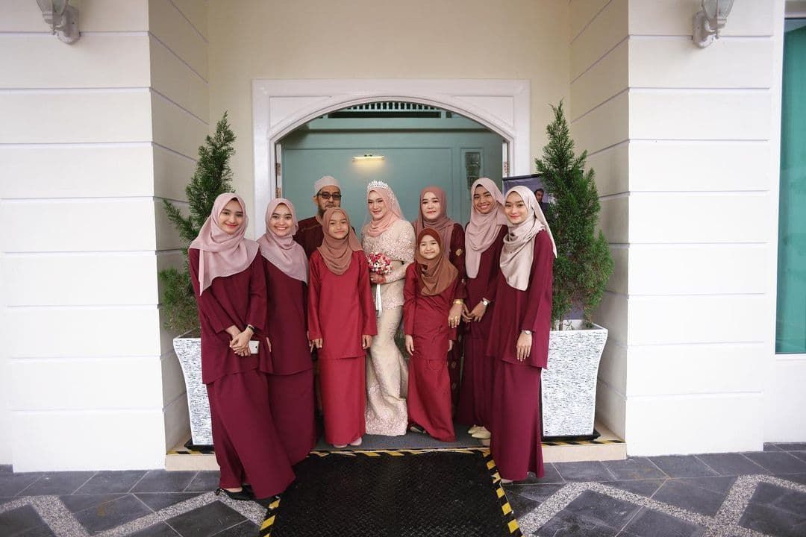 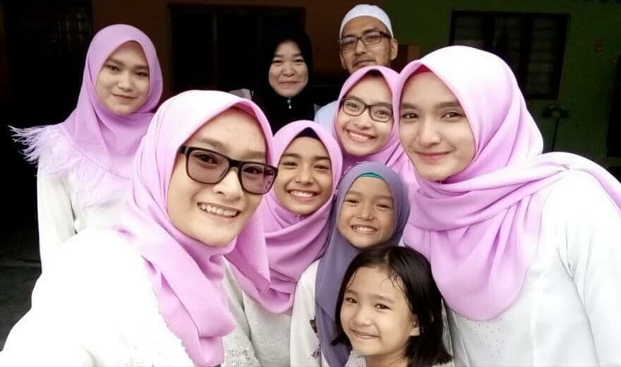These are my graduation photos. I have a Diploma in Accountancy. That's quite fun.


So, I am currently pursuing my degree in Bachelor of Business Administration (Hons.) Islamic Banking at UITM Kota Bharu.
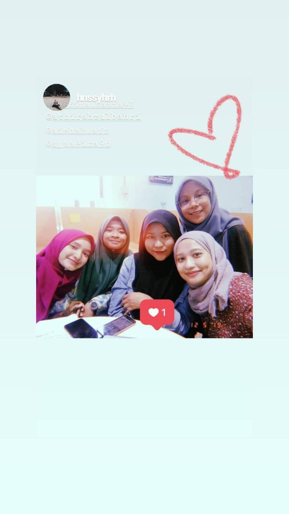But, recently I have been involved with modelling as a part time job.
I have a cat and her name is Janny. I love her very much. This is seriously one of the best gift I’ve ever got from someone special.
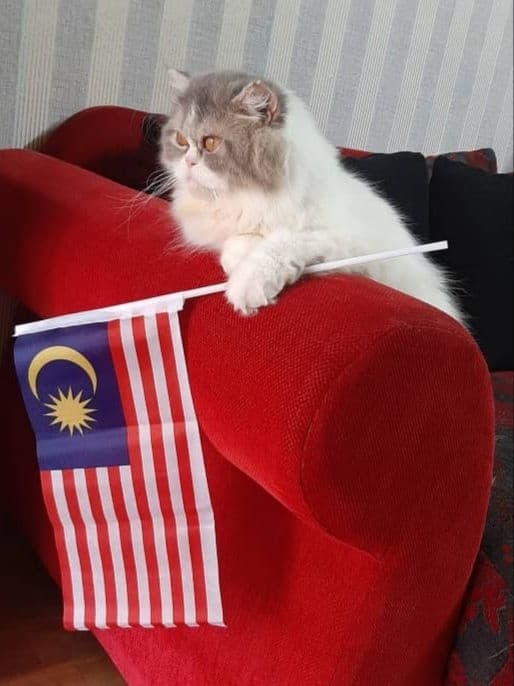Here are my key features. Let me tell you.
In my opinion, for brief moments of time, books release us from the constraints of our own reality. They take us beyond our world and into someone else’s real or imaginary one. These are the books that I haven't finished reading and the books that I have read.
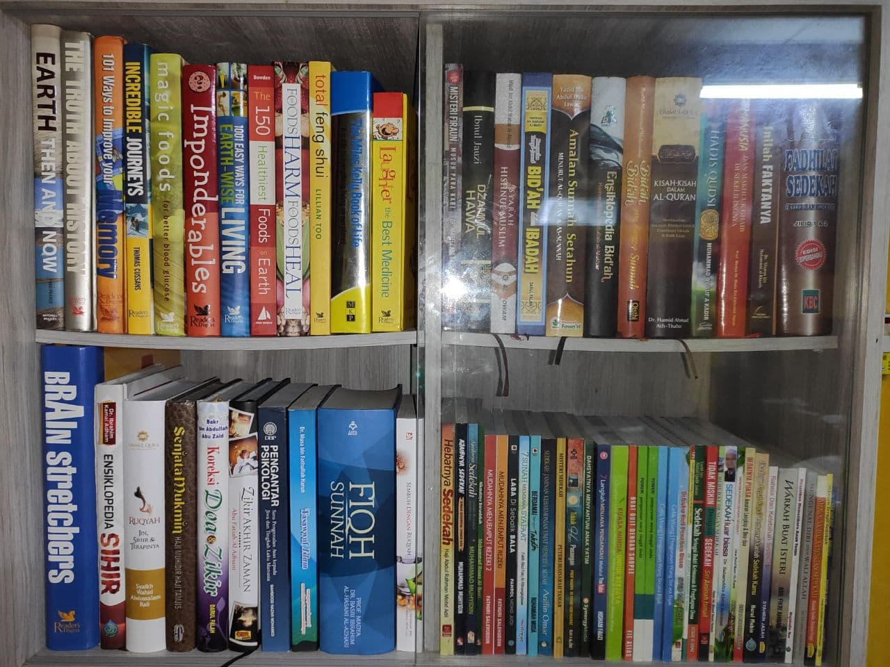 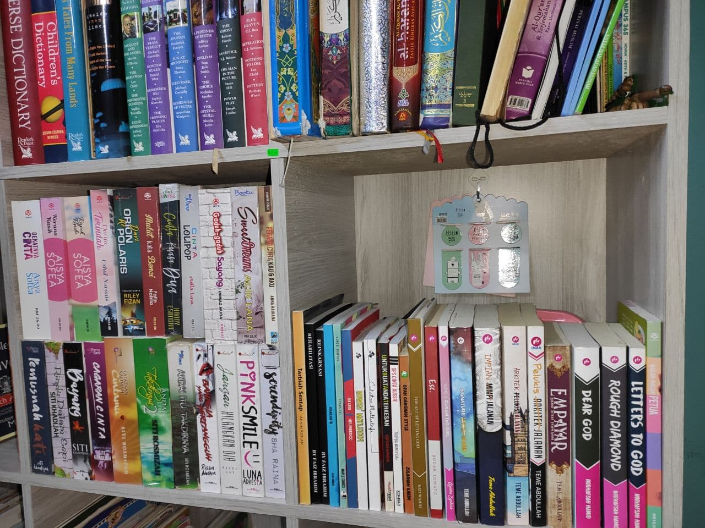I'm into comedy, romance and drama these day. On watching a movie, we laugh, cry and are also filled with other emotions such us adventurousness or fear. Watching a movie provides us with an opportunity to express our emotions. This is my laptop where watch film, I edit and do other stuff.
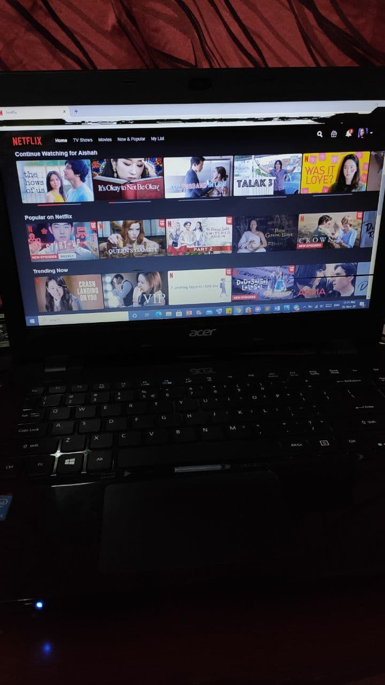I love listening music intrumental especially piano. Music is such an important part of life. Throughout my life when I have been happy, sad, or wanting to just spend time on my own to get things done music has always been the answer. Music is all around us; while driving, eating at a restaurant, and anywhere. A life without music is not truly a full life at all.
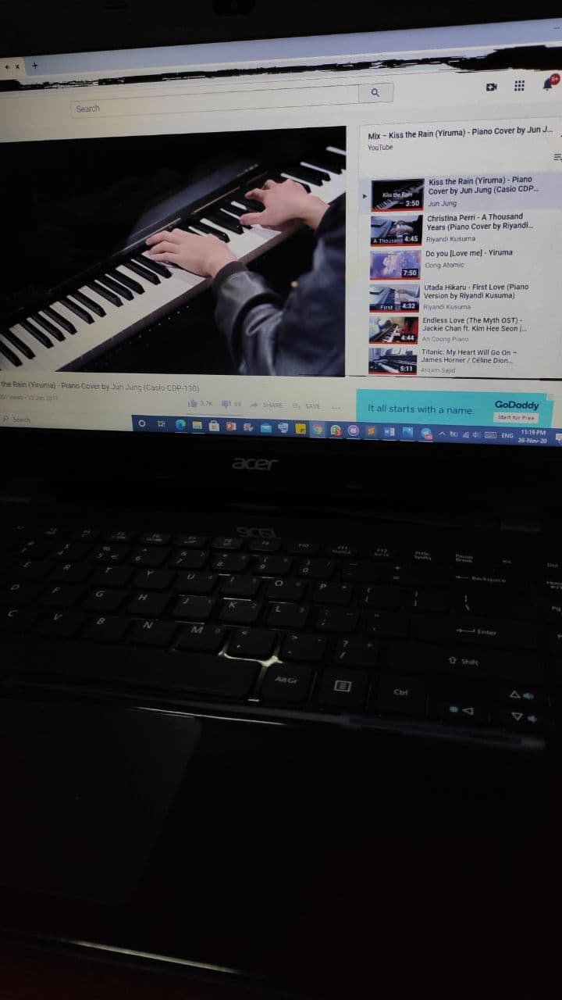Starting and running a small business is a scary thing to do, but it is also extremely exciting and rewarding. I love handle my business by selling Kekasih the Melvins product.
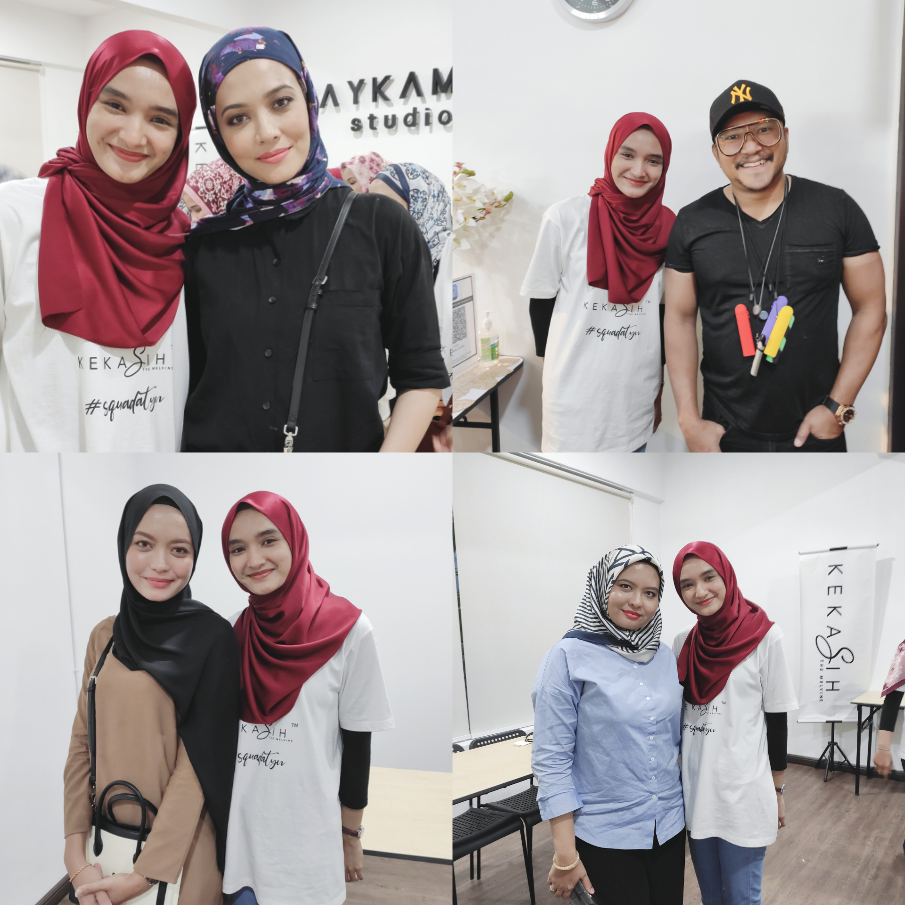I'm 23 years old right now and in 10 years I’ll be 33. Honestly, I don't have any idea who and what will be. All I know is this is me right now. So that's me! I love my life and I'm thankful for every moment of it. I don't know where life is going to take you next but this is me right now. God has plans for us. He knows what's best for us. Even though things get rough, He always reminds is to trust in Him. I don't know what the future holds but this is me now. I don't quite have a future plan yet. I'm still discovering myself every day, taking my time. I genuinely just want to be happy and lead a peaceful life. If I had to describe myself in one word, it'd be awkward? I think. I don't know, I’d like to say I'm funny but yeah, no... Maybe not. One thing that keeps on motivating me to keep going of course I have such a wonderful family and friends that keeps on supporting me and doing whatever I want.
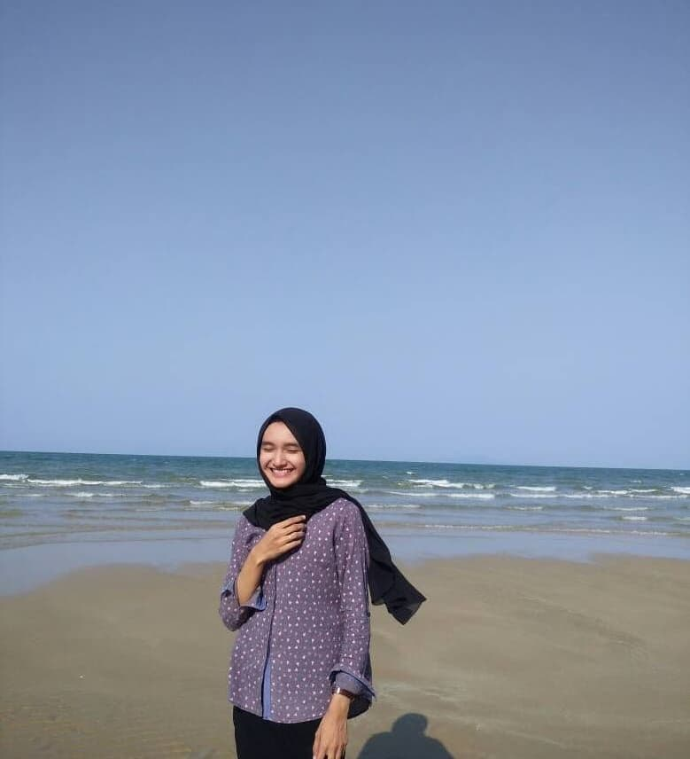 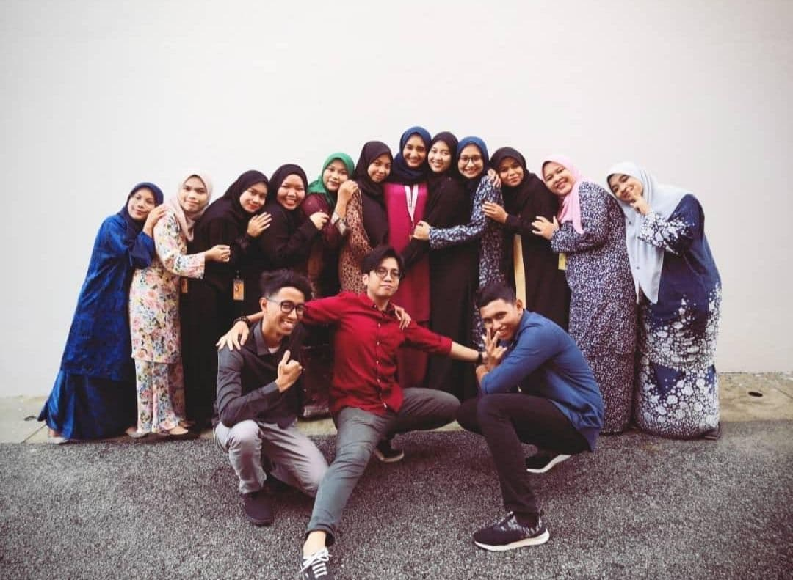